Designing a universal e-reader grip
2025-02-25
I recently got a Kobo e-ink tablet to replace my Kindle. Amazon's efforts to exert control over the Kindle devices 1 2 finally pushed me to drop the platform entirely. The device still works, and maybe I'll jailbreak it to free it from Amazon's control, but on principle I'm just giving up on it.
My Kobo reader is pretty identical in form-factor to the Kindle. Most e-ink readers are pretty similar in size, unless they're doubling as a writing tablet, but at that point I don't think of them as "reader" devices.
So I have a couple e-reader devices, and they all suffer from the same problem: they're designed to be slim and light and are incredibly uncomfortable to hold for long periods of time. They're not really one handed devices. They're light enough to be one-handed, but they're too wide to be gripped/held like a phone.
As I was holding my new Kobo, my hand was cramping up and I thought about what would be better.
I wanted something more ergonomic. Something that would feel more like holding a tool. Maybe something like a game controller? Those are designed to be held for long stretches of time.
So I searched around some 3D printing models and found a game controller grip designed for a phone. Not bad, I can probably modify the dimensions a bit to make it fit a tablet. After all, it's just a bigger slab shape.
I ended up with this:
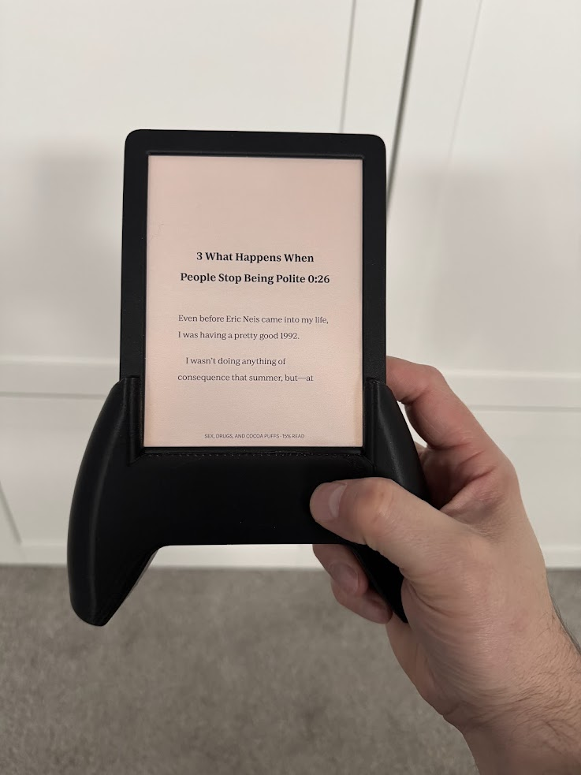This was pretty comfy, but suffered from a few drawbacks. It was too low on the device. My thumb could only just barely reach the touch screen's lower corner quadrant without doing some awkward hand gymnastics. Also, the grips flare out, which means the weight distribution of the device is further away during one-handed use, making it feel heavier.
I needed to move the grips up the body of the tablet, and also reduce how flared the grips were.
I started thinking that maybe I could just print some ergo grips that just kinda clipped/clamped on to the side of the device. There's a little bit of a bezel on the outer edge of the reader, perhaps it could clip on to that without interfering with the screen.
Many failed iterations later, I realized that there just isn't enough bezel to clip on to the side of the reader with enough strength. Look at all the little test clips I printed just to realize it was a bad idea:
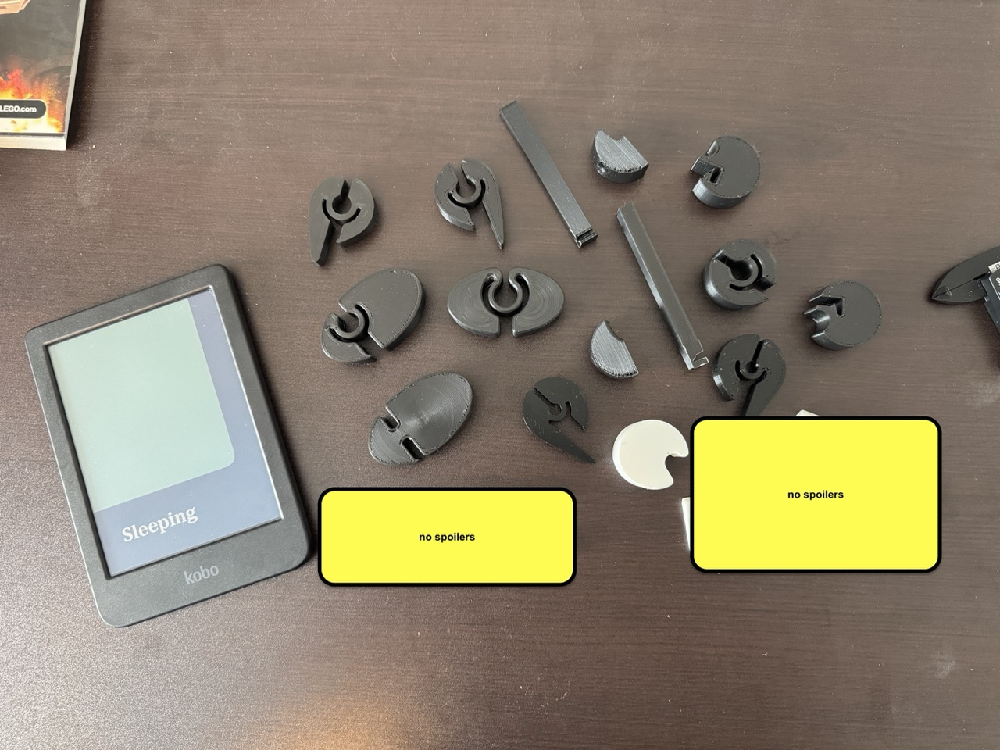Side note: I did learn a lot about printing compliant mechanisms (clips with a bit of flex in them) though, so not entirely wasted effort.
I went back to the mental drawing board and thought about those spring loaded gamer grip things they have for phones. Y'know, like these things:
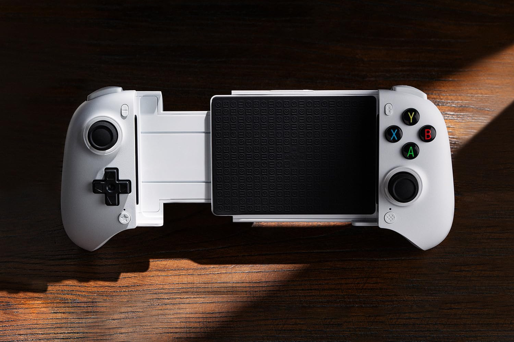A slick idea, but now it would need to have moving parts and some sort of spring! No clue how I would pull that off. Also, it would be really great if as I was working through all these iterations if it was modular such that I didn't have to reprint the whole thing when I just want to try out a new grip.
This was gonna be a massive redesign.
I focused on the mechanical slider parts first, since that would require 2 interlocking parts, as well as some sort of spring action thing (?)
Printing 2 separate parts that fit together with very little wiggle room is actually pretty challenging. Kinda requires knowing your printer's capabilities (which requires a lot of trial an error) and then adding or subtracting a fraction of a millimeter in various places. In my case it's 0.2mm of space that I need to leave in order to make one part fit inside another part.
There's also an additional consideration when 3D printing things, which is that they need to physically be printed out on a flat printer bed. You can't print things in mid-air, so parts need to be designed to be built up layer-by-layer. The common workaround is printing "supports" alongside the desired object, with the intention of ripping them away afterwards. Somewhat like building scaffolding around a building during construction, and then removing it later. However, in practice, supports rarely come away from the print easily or cleanly, and you're left with rough spots or a lot of "post-processing" work. In general, the less supports needed the better.
Anyway, back to the redesign... I got a bit of inspiration from this design which uses a typical office rubber band for the spring. Easy. Simple. Great!
I made this combination of inner and outer slider parts, each with a little hook sticking out that the rubber band could wrap around. Then I added a rounded tab on the end of each of them, which I figured could act as the attachment point for whatever grips I came up with.
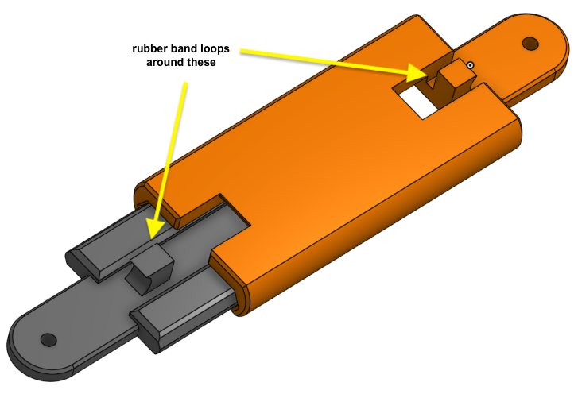 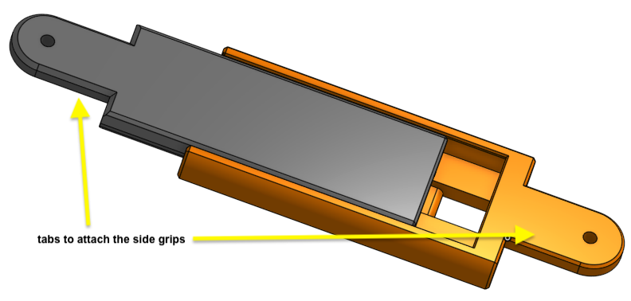I printed a few quick test pieces, just to make sure the slider parts were dimensioned properly. No sense printing both full size parts only to find out they don't fit together.
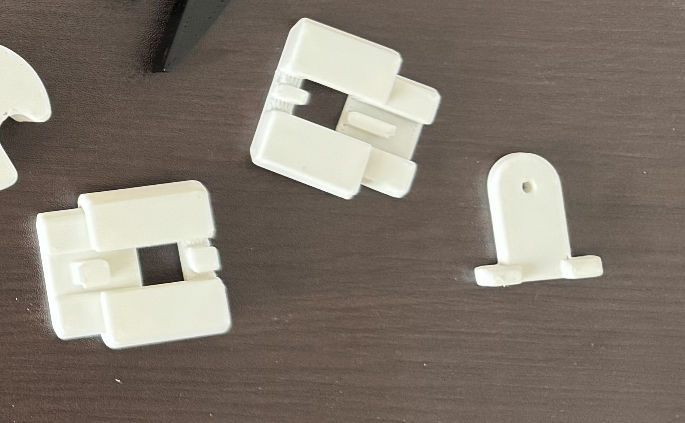I ended up printing a couple variants, but fortunately they fit pretty well. Snug enough to slide without being too loose and rattling. I also printed a test tab, just to give myself a sense of how the attachment would look/feel.
Okay, now I could confidently print the full size slider pieces. Unfortunately, the tab on the outer slider required printing supports, but there was no good orientation to print that piece that didn't involve an overhang of some kind. Sacrifices had to be made. The surface left behind after removing the supports wasn't too bad, and it's gonna be hidden inside the grip handle anyway, so nobody will see it.
Next up, I got to designing the handles. I measured the height and diameter of a screwdriver handle I thought was pretty comfortable and pretty much just did a cylinder with those dimensions. Nothing super complicated... except I also needed to put a groove in the handles to actually grip onto the tablet! 😅
And I needed to put slots in the handles for the tabs to slot into. And also some screw holes, to hold the whole thing together. So... maybe more complicated than I'd hoped, but this is still mostly a prototype.
Here's the handle I designed (and then just mirrored it for the other side)
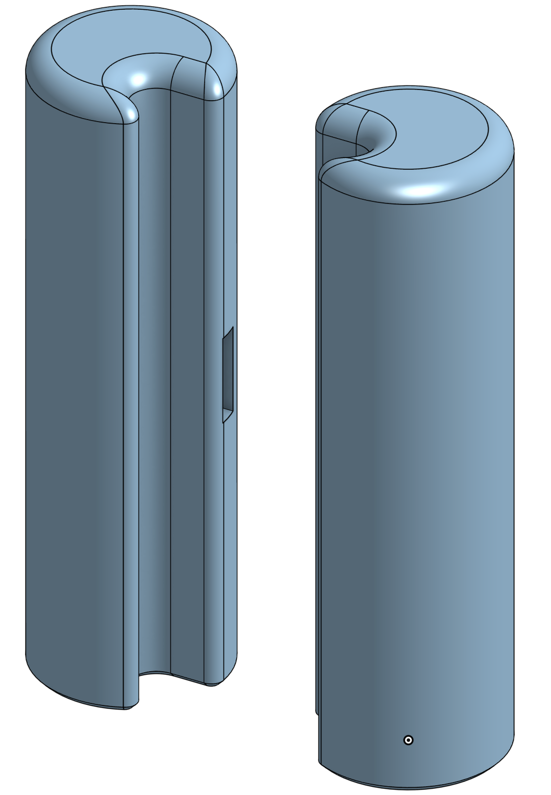I'll probably try to design something more fancy and ergonomic in a future revision, but for now, this worked out pretty damn well.
Behold! the final prototype!
 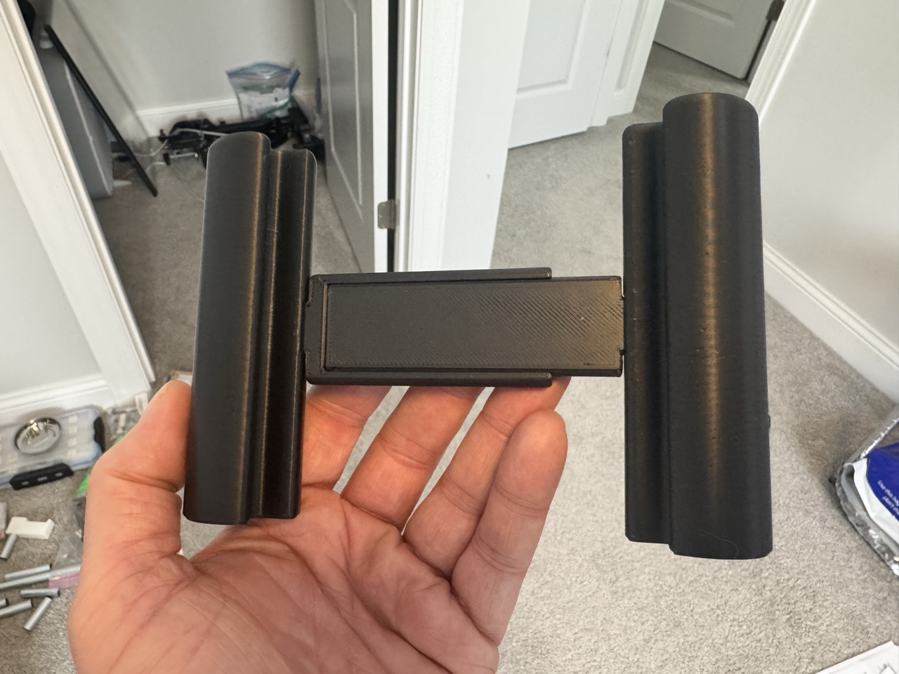
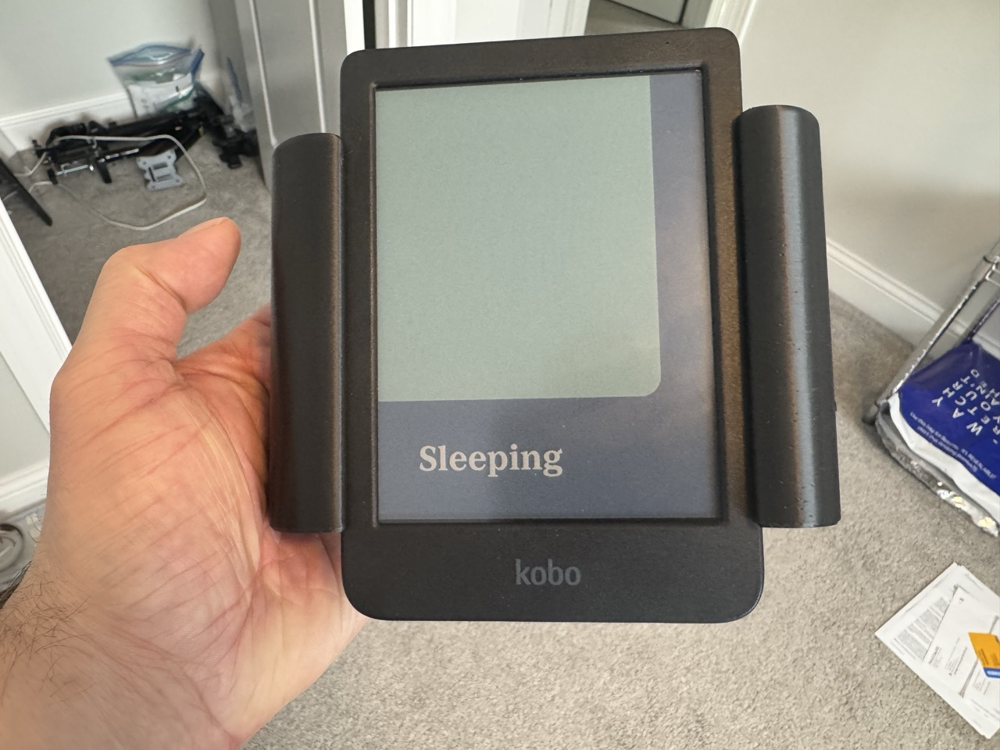
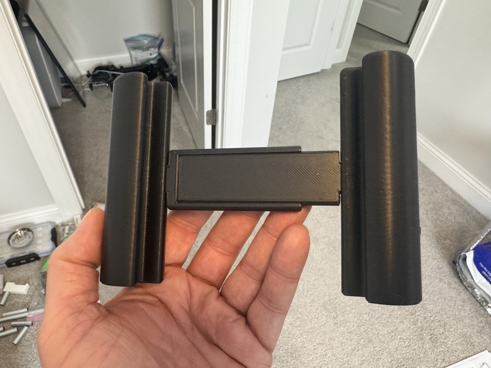
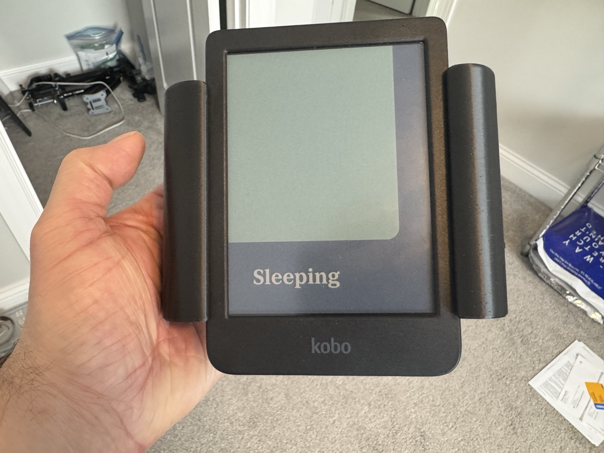
I had to double-loop the rubber band for a stronger grip action, but I'm quite pleased with how well this worked out.
It's kinda amazing how holding a thing in your hands immediately gives you new ideas. Future revision ideas:
-
Ergonomic handles. These are fine, but some more curves and something to hook a finger into would be good.
-
The grooves for holding the tablet should maybe be part of the sliders, rather than part of the handles? That might free up the handle design from having to incorporate grooves for the tablet.
-
Maybe figure out a way to attach the sliders to the handles without needing screws at all. There's some clever "clip" mechanisms I could try to incorporate.
Anyway, if you made it this far, thanks for reading!